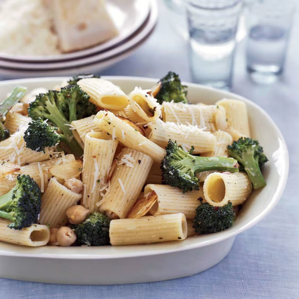

Meyer's Lemony Broccoli and Chickpea Rigatoni
Return Home

Description
This is a recipe for a hearty meal of
broccoli chickpea pasta with lemon
juice, olive oil, parmesan and spices. I personally do not bother
rinsing the broccoli after cooking it.
You can substitute the rigatoni with any pasta you like.
You can find the original recipe by Marc Meyer
here.
Ingredients
- One 19-ounce can chickpeas, drained and rinsed
- 1/3 cup fresh lemon juice
- 3/4 cup extra-virgin olive oil
- Kosher salt and freshly ground pepper
- 1 1/2 pounds broccoli, cut into florets
- 1 pound rigatoni
- 5 large garlic cloves, very thinly sliced
- 1/2 teaspoon crushed red pepper
- 1 cup freshly grated Parmesan cheese
Steps
-
In a medium bowl, toss the chickpeas with the lemon juice and 1/2 cup of the olive oil.
Season with salt and pepper.
- In a large pot of boiling salted water, cook the broccoli until crisp-tender,
about 4 minutes. Using a slotted spoon,
transfer the broccoli to a colander and rinse under cold water until cool.
Add the rigatoni to the boiling water and cook until al dente.
- Meanwhile, in a large, deep skillet, heat the remaining 1/4 cup of olive oil.
Add the garlic and crushed red pepper and cook over moderate heat until the garlic is golden,
about 3 minutes. Add the broccoli and cook until tender, about 5 minutes.
Add the chickpea mixture and cook until warmed through, about 1 minute.
-
Drain the rigatoni, reserving 1/4 cup of the cooking water.
Add the pasta to the broccoli and chickpeas along with the reserved
cooking water and season with salt and pepper. Cook over moderate heat, stirring,
until the rigatoni is coated with sauce. Remove from the heat and stir in 1/2 cup of the Parmesan cheese.
Transfer the pasta to a bowl, sprinkle with the remaining Parmesan and serve.
Return Home